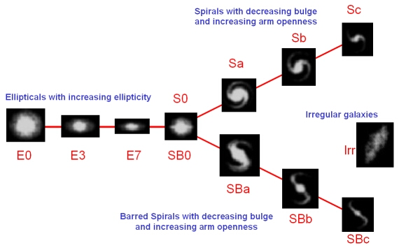

During the 18th and 19th centuries, Sir William Herschel and his son Sir John Herschel both observed that ‘nebulae’ came in a range of different shapes and sizes. Sir Wiliam attempted a classification based on brightness, form and size. Nebulae were either:
Sir John Herschel extended this classification system, making a clear distinction between galactic nebulae (what we now refer to as nebulae) and non-galactic nebulae (now referred to as galaxies).
As photography and spectroscopy improved the standard of observations, further classifications were attempted. In 1919, Curtis considered all nebulae to be either planetary, diffuse or spirals (at that time, less than 10% of photographed nebulae showed any spiral structure. Due to the great distances of the galaxies, it would have been difficult to resolve any spiral structure).
In the early 1920s, Edwin Hubble made observations of non-galactic nebulae with the 100-inch telescope at Mount Wilson Observatory, USA. Non-galactic did not mean the same as extragalactic – it only referred to nebulae that were away from the galactic plane (where most of the planetary and diffuse nebulae were seen). In 1925, Hubble reported that individual stars had been seen in M31 and M33, including novae and Cepheid variable stars. This led to the realisation that these objects were in fact collections of stars beyond the Milky Way. These remote stellar systems were galaxies. The term nebula now refers exclusively to galactic objects such as the gaseous clouds where stars are born (emission and reflection nebula) and the planetary nebulae produced by low to intermediate mass stars during the later stages of their lives.
The ‘tuning fork’ diagram was introduced by Hubble in 1925 as means of classifying extra-galactic nebulae as either elliptical (from circular to lenticular), spiral or barred spiral (in both cases, classed according to the size of the bulge and the amount of winding of the spiral arms);. The terms ‘early’ and ‘late’ (see galaxy types) are sometimes used to indicate which end of the tuning fork a galaxy is found (left=early, right=late), as Hubble thought his classification might indicate an evolutionary sequence. The tuning fork is no longer considered an evolutionary sequence, and these terms are now used only for historical reasons.
The modern classification of galaxies distinguishes between ellipticals, spirals, barred spirals and irregular galaxies. Spirals are further classified according to their luminosity class using a system introduced by van den Bergh in 1960.